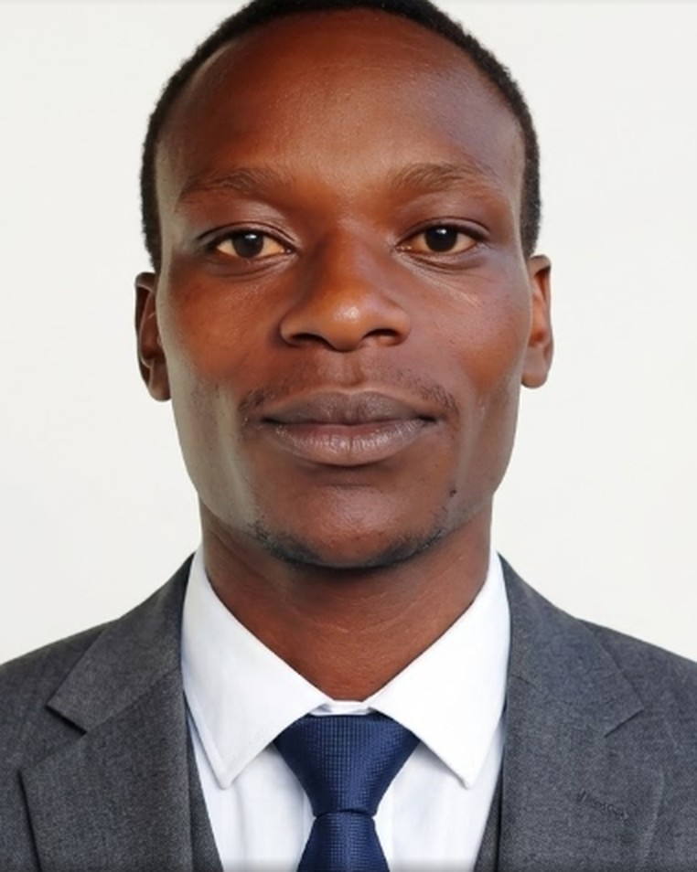
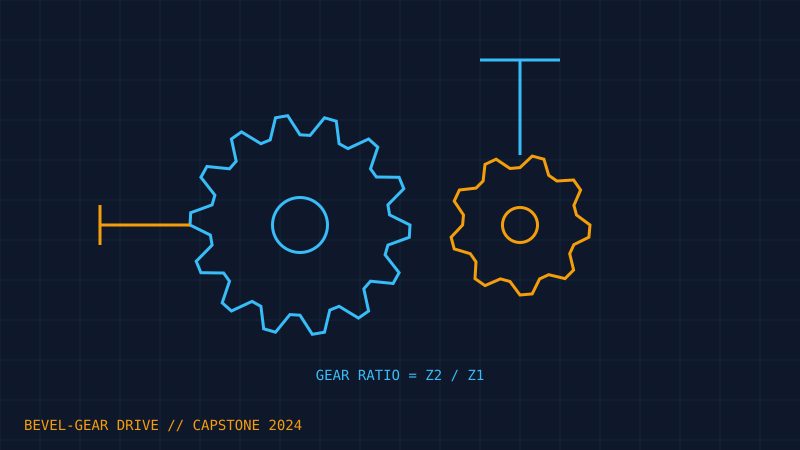
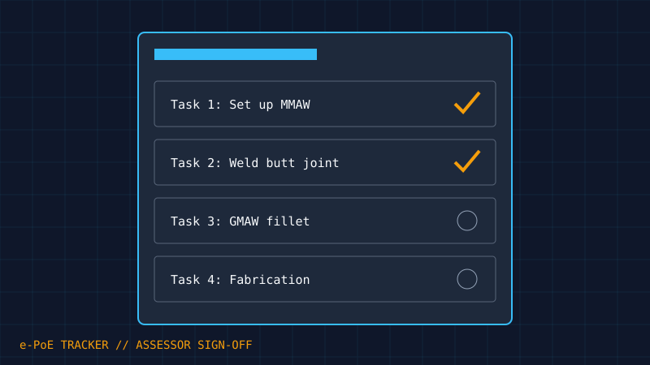
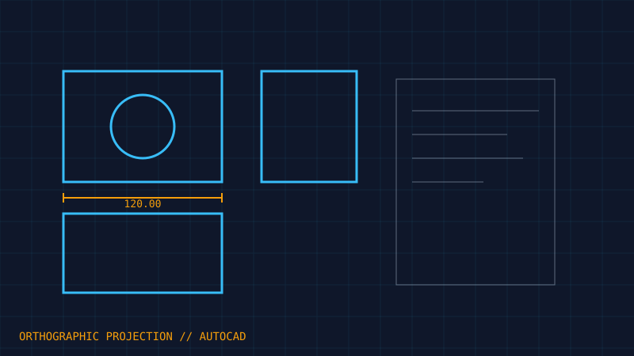

Mechanical Production & Fabrication
Manufacturing processes, machine tool operations, CAD drafting, and industrial welding (MMAW, GMAW). Qualified to teach Power Mechanics and Metal Works.
KENYA • MECHANICAL PRODUCTION • TVET & CBC EDUCATOR • EDTECH BUILDER
I am Kevin Nyambega Mongare, a Mechanical Production Engineer, CBE educator, and EdTech developer bridging workshop craftsmanship with modern digital systems.

I am a multidisciplinary educator, technical trainer, mechanical engineer and digital builder from Kenya, with roots in Nyamira and Kisii. I speak English, Swahili and Ekegusii. In December 2024 I graduated with a Bachelor of Technology Education (Mechanical Technology) from Masinde Muliro University of Science and Technology, with Second Class Honours (Upper Division). My capstone was a human-powered, bevel-gear flower-fence trimming machine. I am equally comfortable calibrating a welding machine, drafting a blueprint, running a school, structuring CBET compliance systems or coding a web app to digitize vocational training.
Manufacturing processes, machine tool operations, CAD drafting, and industrial welding (MMAW, GMAW). Qualified to teach Power Mechanics and Metal Works.
Trainer in the Mechanical and Automotive Department at Keroka Technical Training Institute, instructing Level 4 & 5 TVET trainees under CDACC/CBET standards. Previously Deputy Principal at Hillfields Premier Academy & JSS, teaching Grade 5 to 7 Science, Creative Arts and Pre-Technical Studies under CBC. Also qualified in Physics and Mathematics.
Digitizing vocational education through hierarchical electronic Portfolios of Evidence (e-PoEs) on Google Drive and custom web applications built with GitHub, Netlify and Visual Studio Code.
CBC and CBET lesson design, schemes of work, assessment tools, practical supervision, mentorship and career guidance.
MMAW and GMAW welding, fitting, fabrication processes, machine maintenance and troubleshooting, workshop safety.
Technical drawing and AutoCAD, engineering materials, solid and fluid mechanics, thermodynamics, mechanics of machines, metrology.
Web development with GitHub, Netlify and VS Code, progressive web apps, and Google Drive e-Portfolio structures.
Since 2022 I have worked part-time as a freelance academic writer. I write reflective essays that connect engineering with the human mind, follow financial charting and trading concepts, and enjoy stories about mechanical engineering, education and artificial intelligence.

Capstone project. Mechanical design, gear-ratio calculation, and fabrication of an eco-friendly mechanized hedge trimmer.
Mechanical Production
Web app for TVET trainees to log workshop tasks and receive digital assessor sign-offs.
EdTech & Software
Competency-based training for Level 4 & 5 trainees in Shielded Metal Arc Welding and Gas Metal Arc Welding.
TVET & Classroom
Precision orthographic engineering drawings and visual STEM instructional modules.
Mechanical & ClassroomEducation, teaching practice, industrial attachment, current roles and skills.
Bachelor of Technology Education (Mechanical Technology), Second Class Honours (Upper Division), Masinde Muliro University, 2024.
Licensed Mechanical Engineering Trainer, up to KNQF Level 6, valid to 30 Sep 2029. ID number masked for privacy.
A CBC scheme of work and a CBET welding lesson plan showing how I structure delivery.
Registered teacher with the Teachers Service Commission, Kenya. A verified copy is shared on request.
Full transcripts (mean 66% in final year) and referee contacts from Masinde Muliro University and Kisii National Polytechnic are shared on request.
Keroka Technical Training Institute. TVETA licensed Mechanical Engineering Trainer, up to KNQF Level 6 (License TVETA/T2619074, valid to 30 Sep 2029). Instructs Level 4 and 5 trainees in welding and fabrication under CDACC/CBET standards.
Teachers Service Commission (TSC), Kenya.
Hillfields Premier Academy & JSS. School administration and Grade 5 to 7 Science, Creative Arts and Pre-Technical Studies.
Research, academic writing and content development under strict deadlines.
Masinde Muliro University of Science and Technology. Second Class Honours (Upper Division). Capstone: human-powered bevel-gear trimming machine.
Kisii National Polytechnic. Delivered mechanical technology lessons, prepared teaching aids and assessment tools, supervised practical work.
Kebirigo Tea Factory. Mechanical maintenance, troubleshooting and plant safety.
St. Don Bosco Mixed Secondary School.
Mechanical systems, human psychology and cultural identity, read side by side.
3 min readWhy competency-based training lives or dies on the quality of its evidence trail.
2 min readWhat a mechanical technologist sees when reading account leverage and charts.
2 min readEvery machine begins with a constraint. A gear train cannot give you more work than you put in; it can only trade speed for force, or force for speed. The human mind runs on the same bargain. Attention spent on one thing is withdrawn from another, and what we call discipline is simply good gear selection.
When I design a mechanism, I ask what is fixed (the frame, the load, the materials) and what can move. People have frames too. Language, family and place set the housing in which our thinking turns. Growing up with Ekegusii, Swahili and English meant switching gears daily, and each language carried its own ratio between feeling and precision.
Engineers fear backlash, the slack between meshing teeth where motion is lost. In people it looks like hesitation: the gap between what we intend and what we do. You cannot remove it with force. You remove it with tolerance, repetition and honest measurement.
The lesson I bring to a classroom is that minds, like machines, are not mysterious. They respond to design: clear inputs, well-chosen constraints and feedback that arrives while correction is still cheap.
In competency-based education and training, a trainee is not judged by what they sat through but by what they can show. That makes evidence the real curriculum. If a task is not recorded, observed and signed off, it is hard to say it happened.
Paper portfolios fail quietly: lost pages, unsigned tasks, evidence that cannot be traced to a unit of competency. A hierarchical electronic Portfolio of Evidence fixes the structure first. Unit, element, performance criteria, then the artefact that proves it.
That is why I am building a tracker where trainees log workshop tasks and assessors sign off digitally. The tool should be boring to use and strict about structure, so the assessor's time goes into judging competence rather than hunting for paperwork.
Leverage is a lever. A longer arm lets a small force move a large load, and it also lets a small slip move the load the wrong way. Account leverage in trading behaves the same way: it multiplies the result of a decision without improving the decision.
Reading a chart is closer to reading a stress diagram than to prediction. You look for where load concentrates, where support has held, and how much margin you have before failure. Engineers call that a factor of safety.
My rule from the workshop carries over: size the load to the weakest part of the system, never to the hope. Risk management is not caution for its own sake. It is what keeps the machine running long enough to learn from it.